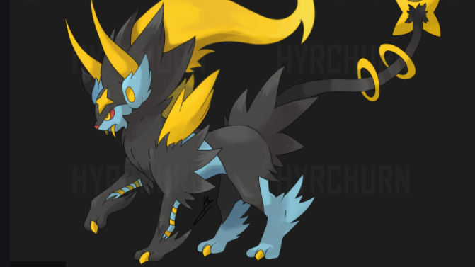
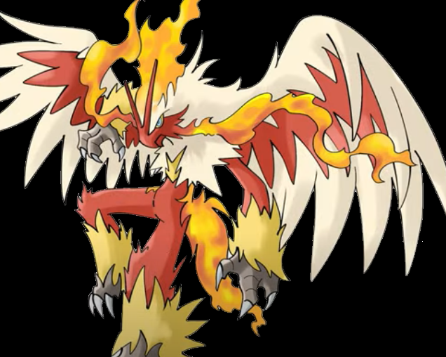

Mega Charizard X is a Fire/Dragon type Pokémon, which makes it weak against Ground, Rock and Dragon moves.powers Blaze: Charizard's usual Ability, which boosts the power of his Fire-type moves when its health is low. Solar Power: Charizard's Hidden Ability. When a Charizard with this Ability is exposed to harsh sunlight, his Special Attack power rises, at the cost of its health slowly lowering over the course of the fight. Flight: Using its mighty wings, Charizard can fly up to 4,600 feet into the air.

It is a large panda pokemon that evolves from the lovable panda pokemon Pancham. It is Fighting/Dark type and evolves via level 32 as long as theres a dark type pokemon in your party. However, despite its dark attributes, it is said to have a heart of gold and doesnt allow anyone to bully the weak.powers iron fist Powers up punching moves. Generation VIII. Powers up punching moves. Iron Fist (Japanese: てつのこぶし Iron Fist) is an Ability introduced in Generation IV. Prior to Generation V, it was the signature Ability of Hitmonchan.mold breaker Moves can be used on the target regardless of its abilities

Mega Umbreon is an Exclusive Pokémon released as part of the twenty-third Mass-Click Weekend. It was released on the 27th of June 2016 and was released in the form of a Mega Stone.

Luxray can see through solid objects. It will instantly spot prey trying to hide behind walls, even if the walls are thick.
Grapploct is a blue, amphibious, octopus-like Pokémon with a yellow jagged eyemask-like marking, suckers, and what appears to be a breathing organ on the ...

Class: Mega Ultra Rare. Types: Dragon.

In battle, Blaziken blows out intense flames from its wrists andattacks foes courageously. The stronger the foe, the moreintensely this Pokémon's wrists burn.
Delphox is a Fire/Psychic type Pokémon introduced in Generation 6 . It is known as the Fox Pokémon . Delphox evolves from Braixen at level 36.

Super Mega Charizard X


Mega Charizard x and y fusion


Mega Dark lucario
In battle. Inner Focus is an ability that prevents the user from flinching in battle(save for when Mold Breaker or Zekrom and Reshiram or Kyurem when fused with either of them are in play).

Ultimate Serperior
It takes in solar energy and boosts it internally.
Mega dark lucario About it Its aura has expanded due to Mega Evolution. Governed only by its combative instincts, it strikes enemies without mercy. Powers Bone rush Power up punch Metal sound Sword dance Aura Sphere Ultimate Serperior About it It takes in solar energy and boosts it internally. Powers Leaf blade Leaf storm Leaf tornado Wine whip Leer Quick attack Wrap Dragon tail Energy ball Solar beam Hyper beam Mega charizard x About it The overwhelming power that fills its entire body causes it to turn black and creates intense blue flames. Powers Blast Burn Steel wing Roar Mega dragonite About it It’s a kindhearted Pokémon. If it spots a drowning person or Pokémon, Dragonite simply must help them. Powers Inner Focus Mega blaziken About it In battle, Blaziken blows out intense flames from its wrists and attacks foes courageously. Powers Flamethrower Overheat Quick attack Blaze Kick Mega luxray About it Luxray can see through solid objects. Powers Thunderbolt Shock wave Double team X-ray vision Hyper delphox About it It gazes into the flame at the tip of its branch to achieve a focused state. Powers Flamethrower Overheat Fire blast Will-o-wisp Mega umbreon About it When this Pokémon becomes angry, its pores secrete a poisonous sweat, which it sprays at its opponent’s eyes. Powers Quick attack Iron tail Mega pangoro About it This Pokémon is quick to anger, and it has no problem using its prodigious strength to get its way. It lives for duels against Obstagoon. Powers Hammer arm Air slash Dark pulse Mega punch Mega Garaploct About it A body made up of nothing but muscle. Powers Octolock Octolook Detect Close combat
The Beast Ball (Japanese: ウルトラボール Ultra Ball) is a type of Poké Ball introduced in Generation VII. It can be used to catch a wild Pokémon, being more likely to succeed against Ultra Beasts and less likely against other Pokémon.

1.Mega Charizard Tough Claws: Mega Charizard 's Ability, which boosts the power of moves it uses that make contact with the opponent. 2.Mega Luxray Luxray has powerful eyesight that is capable of seeing through most objects and walls, like X-ray vision. It uses this ability for hunting and keeping track of its offspring. However, this ability requires a lot of electricity to use. 3.Mega Umbreon When a Pokémon with Synchronize is burned, paralyzed, or poisoned by another Pokémon, that Pokémon will be inflicted with the same status condition. Synchronize will not inflict sleep or freeze. 4.Mega Grapploct Superpower is a Fighting-type Main move in Pokémon GO that deals 85 damage and costs 50 energy. It is strong against Normal, Rock, Steel, Ice and Dark Pokémon and weak against Flying, Poison, Bug, Psychic and Fairy Pokémon. 5.Mega Pangoro Body Slam inflicts damage and has a 30% chance of paralyzing the target. It cannot paralyze Normal-type Pokémon. 6 Multiscale: Reduces damage when HP is full. Shed Skin: The Pokémon may heal its own status problems. 7.Mega Dragonite Multiscale: Reduces damage when HP is full. Shed Skin: The Pokémon may heal its own status problems. 8.Mega Blazikin Its powerful legs let it jump clear over buildings. In battle, Blaziken blows out intense flames from its wrists and attacks foes courageously. The stronger the foe, the more intensely this Pokémon's wrists burn. Blaziken has incredibly strong legs—it can easily clear a 30-story building in one leap. 9.Hyper Delphox Instead of boosting Fire-type moves' power, Blaze now technically boosts the Pokémon's Attack or Special Attack by 50% during damage calculation if a Fire-type ... 10.Beast Ball The Beast Ball (Japanese: ウルトラボール Ultra Ball) is a type of Poké Ball introduced in Generation VII. It can be used to catch a wild Pokémon, being more likely to succeed against Ultra Beasts and less likely against other Pokémon.
1.Mega Charizard 2.Mega luxray 3.Mega Umbreon 4.Mega Grapploct 5.Mega Pangoro 6.Mega Dragonite 7.Mega Blazikin 8.Mega Delfox 9.Beast Ball
Ninja moves,to defend its weakness,leran new moves,to move fast and do not get any harm
Powers Damage Shadow ball 99% Thunder bolt 50% Protect 0% Hypnotize 100% Shield 0% For Charizard and Luxray… Fire blaze 99% Quick attack 50% Freeze 50% Fire kick 75% Protect 0% Hypnotize 100% Shield 0% For Blazikin and Delphox…
TO SEE THE NEXT PAGE CLICK ONE TIME ON THE 'NEXT' TEXT GIVEN BELOW